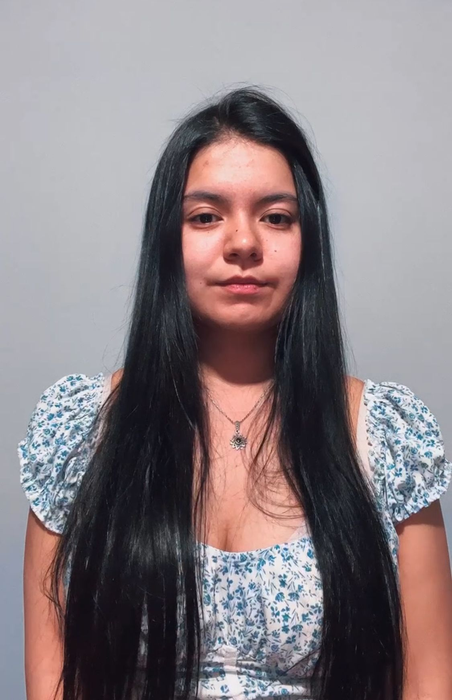
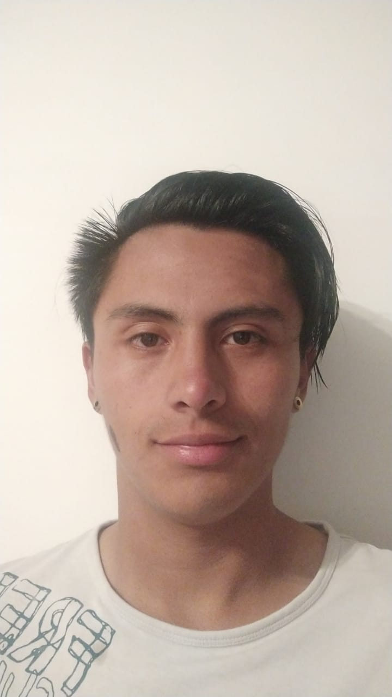

| Rol | Nombre | Foto | Biografía |
|---|---|---|---|
| Guía y asesor del proyecto | Juan Camilo | |
Brinda asesoramiento y orientación al equipo del proyecto, proporciona conocimientos especializados en áreas específicas del proyecto, y ayuda al equipo a tomar decisiones informadas basadas en su experiencia. Otorga retroalimentación y recomendaciones constructivas sobre el progreso del proyecto, y ayuda al equipo a identificar áreas de mejora y oportunidades para el crecimiento. Y se comunica regularmente con el equipo del proyecto, estando disponible para responder preguntas o inquietudes en cualquier momento del proceso. |
| Rol | Nombre | Foto | Biografía | |
|---|---|---|---|---|
| Líder del area de desarrollo de Mecánica | Esteban Salazar |  |
Está a cargo de supervisar y dirigir al equipo en las etapas del proyecto, desde la investigación y definición de requisitos hasta la simulación y validación. Durante la etapa de diseño detallado, se enfocó en la modificación, corrección de las piezas y la verificación de los bocetos en conjunto con el equipo, implementación de diseños CAD a otros software y montaje fisico del proyecto. Además, trabajó en estrecha colaboración con el resto del equipos para asegurarse de que el diseño final fuera coherente con los objetivos del proyecto y las restricciones de tiempo y recursos. | |
| Project Manager | Ángela Hurtado |  |
Encargada del liderazgo y ejecución de un proyecto con habilidades en planificación, control, resolución de conflictos en conjunto con la coordinación de equipos, recursos, plazos y procesos, para esto se implementaron herramientas de gestión como diagramas de Gantt, matrices de responsabilidad, informes de avance y matrices de calidad para el seguimiento y control del proyecto. Adicional a esto, como participante del equipo de mecánica se realizó la implementación de diseños mecánicos, análisis de esfuerzos y validación de sistemas mecánicos utilizando herramientas CAD, así como la creación de documentos técnicos del proceso y los resultados obtenidos, los cuales sirven como referencia para futuros proyectos. | |
| Diseño estructural | Daniel Fajardo |  |
Integrante del área de mecánica que participo en el diseño estructural del robot, así como en la construcción del mismo, apoyado en la herramienta de solidworks se trabajo conjunto al equipo análisis estáticos y dinámicos que nos permitieron corregir y adaptar el robot para mejorar su funcionamiento | |
| Delineante y Co-responsable del diseño CAD en el proyecto Campibot | Ligia Vanesa |  | Su trabajo es llevar a cabo el diseño detallado de la estructura y componentes de Campibot, utilizando herramientas como AutoCAD y SolidWorks para producir planos técnicos precisos y documentación necesaria para la fabricación y montaje. Además, como encargada del control de los materiales y elementos utilizados para la estructura, fue responsable de garantizar la calidad de los materiales y asegurar que se cumplan los requisitos de diseño y las especificaciones técnicas. Para ello, trabajo estrechamente con el equipo de fabricación y ensamblaje para seleccionar los materiales adecuados y supervisar el proceso de fabricación para asegurarse de que se cumplan los estándares de calidad requeridos. | |
| Investigador de materiales | Kevin Niño |  |
Ayuda a buscar y garantizar la calidad de los amteriales y sus requitisto, evaluó los materiales a usar en el diseño de CAMPIBOT y apoya estrechamente con los demas miembros en la creación de los planos y cartas tecnológicas. | |
| Asesor de materiales y cotizaciones | Sebastian Suesca |  |
Encargo de la realización de planos, cotización y asesoramiento sobre los procesos de manufactura en toda la área de mecánica, como lo es el mecanizado, agregando, la realización de cotizaciones es otra labor clave en el área de la mecánica, ya que permite estimar el costo de los equipos y maquinarias, tomando en cuenta el uso de materiales, mano de obra y otros factores relevantes. Un buen conocimiento de los precios y de los proveedores de materiales es imprescindible para realizar cotizaciones precisas y competitivas. |
| Rol | Nombre | Foto | Biografía |
|---|---|---|---|
| Líder del área de desarrollo electrónico | Jean Bermudez |  |
Es responsable de liderar en el diseño, desarrollo y la planimetría de los equipos y las conexiones del proyecto, así como de investigar y acondicionar los motores para garantizar su óptimo rendimiento. Trabaja en estrecha colaboración con otros miembros del equipo, incluidos los ingenieros mecánicos y eléctricos, para garantizar que los componentes y sistemas estén conectados y funcionando correctamente. Sus responsabilidades incluyen: Diseñar la planimetría de los equipos y las conexiones, que sean compatibles con otros elementos del sistema. Investigar y seleccionar los motores adecuados para el proyecto. Acondicionar los motores. |
| Diseñador y probador de sistemas electrónicos | Castellanos |  | Planimetría y bocetos eléctricos y electrónicos del Campibot, investigación para el funcionamiento correcto del sistema y diferentes condiciones de trabajo para los elementos presentes en el sistema, así como pruebas de funcionamiento del motor. Sus responsabilidades incluyen: Diseñar la planimetría de los equipos y las conexiones, que sean compatibles con otros elementos del sistema. Investigar y seleccionar los motores adecuados para el proyecto. Acondicionar los motores. |
| Investigador de problemáticas | Miguel Cruz |  |
Encargado de buscar que puede afectar directa o indirectamente el funcionamiento del proyecto, investigación y acondicionamiento del área electrónica para el correcto funcionamiento en campo junto con participación directa en el acondicionamiento de motores. |
| Investigadora en electrónica | Nicole Villalba |  |
Es responsable de llevar a cabo investigaciones en el área de la electrónica para desarrollar y mejorar los componentes y sistemas utilizados en el proyecto. Especificamente investiga y evalua las tecnologias del mercado, diseña nuevos componentes necesarios y trabaja estrechamente en colaboracion con otros miembros del equpo de electrónica |
| Investigador y apoyo en el equipo de electrónica | Juan José León Baines |  |
Es responsable de llevar a cabo las investigaciones necesarias para el proyecto en cuestión y de brindar apoyo a los demás miembros del equipo de electrónica en todas las actividades relacionadas con el proyecto. Trabaja en estrecha colaboración con otros miembros del equipo para garantizar que se cumplan los objetivos del proyecto en el tiempo y presupuesto previstos. |
| Rol | Nombre | Foto | Biografía |
|---|---|---|---|
| Líder del área de desarrollo de control | Gustavo Correa |  |
Responsable del área de control del proyecto "CAMPIBOT", encargado del desarrollo e implementación del sistema de control del robot agrícola autónomo llamado "CAMPIBOT" destinado a la siembra y cuidado de cultivos. Responsabilidades principales: -Coordinación y liderazgo del equipo de control para asegurar el cumplimiento de los objetivos del proyecto en términos de tiempo, costo y calidad. -Diseño e implementación de algoritmos de control para el movimiento autonomo del robot junto a los demas miembros del area. -Colaboración con otros equipos del proyecto, como el equipo, eléctrico y de software TI, para asegurar la integración adecuada del sistema de control con los demás subsistemas del robot "CAMPIBOT". |
| Investigadora en sistemas de control | Ariana Bohorquez |  |
Encargada de investigar y probar los sistemas de control necesarios para el proyecto, con el objetivo de garantizar su correcta implementación y funcionamiento. Trabaja en estrecha colaboración con otros miembros del equipo |
| Encargada de las pruebas con sensores | Lizeth Mahecha |  |
Es responsable de llevar a cabo pruebas con los sensores utilizados en el proyecto para medir la humedad en el ambiente. Trabaja en estrecha colaboración con el investigador principal de control y otros miembros del equipo para asegurarse de que los resultados de las pruebas sean precisos y relevantes. Sus responsabilidades incluyen: Seleccionar y adquirir los sensores adecuados para medir la humedad en el ambiente. Configurar y calibrar los sensores para asegurarse de que estén funcionando correctamente y produzcan mediciones precisas. |
| Encargada del control de ambiente | Vanesa Pardo |  |
Responsable de asegurarse de que el ambiente en el que se realiza el experimento sea adecuado para los participantes. Se enfoco en el aspecto de la iluminación, se asegura de que el sistema de iluminación funcione adecuadamente durante todo el experimento y de que no haya variaciones en la intensidad o el color de la luz que puedan afectar los resultados.Esta persona colabora estrechamente con el coordinador del grupo de control. |
| Rol | Nombre | Foto | Biografía |
|---|---|---|---|
| Coordinador de tecnología | Felipe Cruz |  |
Encargado de diseñar y desarrollar una página web atractiva, intuitiva y fácil de navegar, que permita a los usuarios acceder a la información relevante sobre el proyecto y sus resultados. Además, configura y administrar Firebase, una plataforma de desarrollo de aplicaciones móviles y web, para obtener la eficiencia y seguridad de la página web, esto implicó la integración de servicios de autenticación, almacenamiento de datos, bases de datos, entre otros. Para una experiencia completa del proyecto CAMPIBOT, integra una Raspberry Pi 4 model B para conectarse con el control y la página web. De esta forma, los usuarios podrán visualizar los datos recopilados por el sistema de control en tiempo real a través de la página web. |